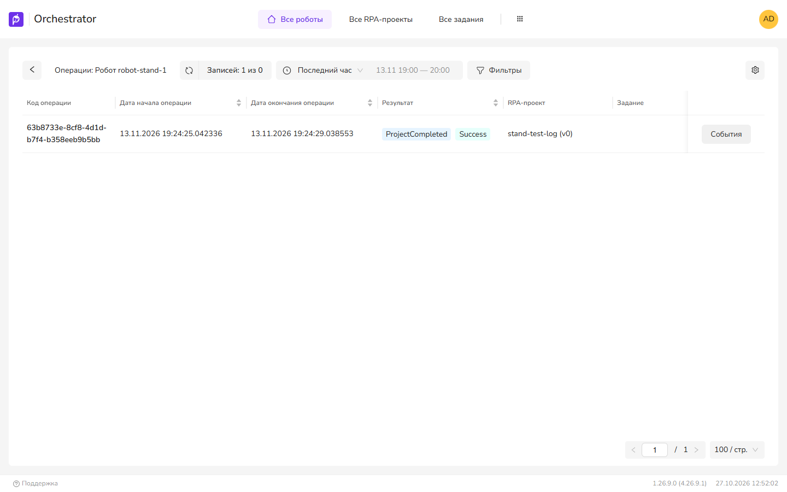

Журнал робота пустой или не открывается
Журнал робота хранит служба RobotLogs. Робот отправляет записи в RobotLogs по HTTP, RobotLogs накапливает их в буфере и записывает в БД журналов. UI4 читает журнал через WebApi, а WebApi — из RobotLogs по HTTP. При сбое в любом звене журнал пуст.
Симптомы
- Журнал робота открывается, но записей нет, хотя робот работал.
- «Server error - check the terminal for more info!» или «Истек таймаут запроса. Попробуйте повторить запрос!».
- Записи есть за одни периоды и отсутствуют за другие.
- Длинные сообщения обрезаны.

Вероятные причины
- Выбран период по умолчанию: журнал открывается за последний час.
- WebApi не может обратиться к RobotLogs по адресу из конфигурации.
- Службе RobotLogs неизвестен адрес WebApi, и записи робота отклоняются.
- RobotLogs не успевает записывать в БД: буфер переполнен или запись в БД завершается ошибкой.
- Робот отключён или перенесён в папку, к которой у пользователя нет доступа.
Что проверить
- В журнале робота выберите период Последние 24 часа или Выбрать диапазон. Записи за нужное время видны
- Проверьте журнал WebApi на «RobotLogs error occurred. For more details, see WebApi and RobotLogs log files». Строка означает, что WebApi не получил ответ от RobotLogs. В UI4 ошибка в этом случае не отображается, журнал пуст. Строки нет
- Проверьте журнал RobotLogs на строки ниже. Таких строк нет
| Строка в журнале RobotLogs | Что означает |
|---|---|
| «Не найден робот с ключом …» | RobotLogs не получил робота от WebApi. Запись отклонена с 404 «Робот не найден.» Пустой ответ кэшируется на Cache:Robots:DurationInMinutes |
| «Ошибка при обращении к Оркестратору» | WebApi недоступен для RobotLogs |
| «Сообщение [LogEvent] потеряно по причине ограничения входного буфера.» | Буфер InputBufferRobotLogs:MaxQueueLength полон: БД не успевает |
| «Ошибка сброса буфера логов в БД.» | Запись пакета в БД завершилась ошибкой. Повторной попытки нет, пакет потерян |
Как исправить
RobotLogs недоступен для WebApi
Если RobotLogs:BaseUrl в WebApi не задан, WebApi обращается к RobotLogs через внешний адрес RobotDeployment:RobotLogsBaseUrl или RobotDeployment:OrchBaseUrl и путь /logs/, который nginx проксирует в RobotLogs. Этот адрес должен быть доступен с сервера WebApi. Иначе задайте прямой адрес службы: RobotLogs:BaseUrl (в поставке nginx RobotLogs слушает 127.0.0.1:56748) и перезапустите WebApi. Таймаут запроса — RobotLogs:ClientTimeoutInSec, по умолчанию 50 с.
Службе RobotLogs неизвестен адрес WebApi
Если в RobotLogs не задан Orchestrator:BaseUrl, адрес WebApi определяется по первому событию, которое WebApi отправляет через RabbitMQ. До этого записи робота не принимаются. Такое возможно, если RobotLogs запущен раньше WebApi. Задайте Orchestrator:BaseUrl в конфигурации RobotLogs и перезапустите службу. Новые записи появляются в журнале
Записи теряются
Ускорьте работу БД журналов: секционирование и удаление старых секций, см. Оркестратор и БД работают медленно. Таймауты подключения к БД журналов — DbConnection:Items:Logs:Timeout и …:CommandTimeOut. Буферы службы:
| Параметр RobotLogs | Назначение | По умолчанию |
|---|---|---|
InputBufferRobotLogs:MaxQueueLength | Размер буфера записей журнала робота | 50000 |
InputBufferRobotLogs:ThreadSleep | Пауза между сбросами буфера, мс | 1000 |
RobotEventFilter:TextLengthLimit, ParsedMessageLengthLimit | Сколько символов сообщения возвращается при чтении списка | 2000 |
Длинные сообщения
Сообщение длиннее 300 символов в UI4 обрезается; рядом отображается кнопка, которая открывает полный текст в боковой панели. Текст сообщения хранится целиком.
Папки и отключённые роботы
Записи журнала привязаны к роботу, а не к папке. При включённых папках пользователь видит журнал роботов из доступных ему папок, кроме отключённых роботов. После переноса робота в другую папку его журнал виден тем, у кого есть доступ к новой папке.